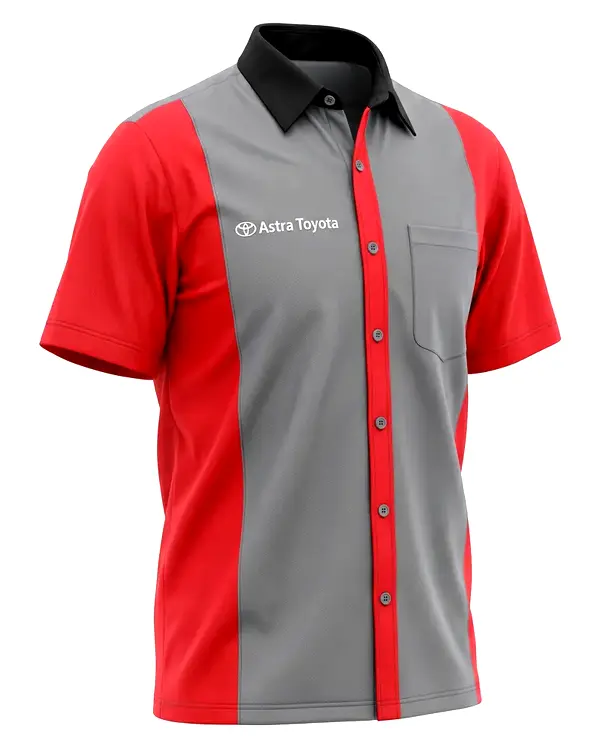
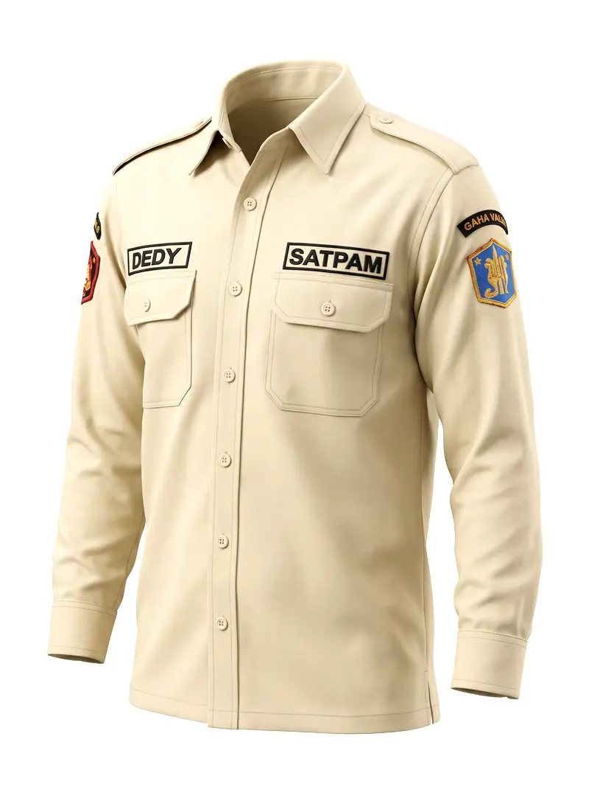

Dua jenis seragam dinas yang paling banyak dipesan instansi pemerintah, perusahaan swasta, dan organisasi di Indonesia adalah seragam PDH (Pakaian Dinas Harian) dan seragam PDL (Pakaian Dinas Lapangan). Meski sering disebut bersama, keduanya memiliki fungsi, bahan, dan konteks penggunaan yang sangat berbeda.

Contoh seragam PDH kemeja korporat — produksi PT Karmeda untuk klien industri otomotif
PDH (Pakaian Dinas Harian) adalah seragam untuk kegiatan kerja sehari-hari di dalam ruangan. Dirancang untuk profesionalisme dan kerapian — bahan lebih halus, potongan formal, tampilan rapi sepanjang hari.
PDH digunakan oleh:
PDL (Pakaian Dinas Lapangan) dirancang untuk aktivitas outdoor atau kondisi kerja keras. Prioritas utama: ketahanan dan kenyamanan bergerak — bukan tampilan formal.
PDL digunakan oleh:


Kiri: contoh PDH kemeja korporat. Kanan: contoh PDL wearpack industri
| Aspek | PDH | PDL |
|---|---|---|
| Fungsi | Kegiatan harian dalam ruangan | Aktivitas lapangan / outdoor |
| Bahan | American Drill, Taipan, Woolpeach | Cotton Drill, Ripstop, Canvas |
| Ketebalan | Sedang — ringan dan adem | Tebal — kuat dan tahan lama |
| Potongan | Formal, slim fit | Regular/loose fit, banyak saku |
| Atribut | Bordir nama, pangkat, logo instansi | Velcro patch, saku besar, epaulet |
| Harga/pcs | Rp 135.000 – Rp 280.000 | Rp 150.000 – Rp 400.000 |
Konsultasi gratis · Sample tersedia · MOQ mulai 30 pcs · Pengiriman seluruh Indonesia
65% polyester + 35% cotton. Ringan, tidak mudah kusut, harga terjangkau. Cocok untuk PDH harian karyawan operasional dan staf kantor umum.
100% polyester microfiber. Sangat ringan, tampilan elegan, sirkulasi udara baik. Pilihan terbaik untuk PDH staf front office atau pejabat menengah.
100% polyester dengan finishing peach. Tampilan premium, cocok untuk PDH manajemen dan direksi.
Tips Memilih Bahan PDH: Untuk instansi yang karyawannya bekerja di ruangan ber-AC penuh hari, Taipan Tropical adalah pilihan terbaik — sangat ringan dan tidak mudah kusut meski dipakai 8+ jam.
100% cotton atau 80/20 blend. Kuat, menyerap keringat, nyaman seharian di lapangan. Standar PDL untuk satpam dan petugas lapangan.
Anyaman grid tahan sobek. Kuat dan ringan, cocok untuk PDL mobilitas tinggi di kondisi ekstrem.
Paling tebal dan kuat. Untuk PDL tugas berat: SAR, tambang, konstruksi bangunan.

Contoh seragam PDL untuk petugas keamanan (satpam) — bahan Cotton Drill, tahan untuk aktivitas patroli
| Jenis | Bahan | Harga/Pcs |
|---|---|---|
| PDH Kemeja Pendek | American Drill | Rp 135.000 – Rp 165.000 |
| PDH Kemeja Panjang | American Drill / Taipan | Rp 150.000 – Rp 200.000 |
| PDH Premium | Woolpeach / Taipan Tropical | Rp 200.000 – Rp 280.000 |
| PDL Standar | Cotton Drill | Rp 150.000 – Rp 220.000 |
| PDL Taktis | Ripstop | Rp 220.000 – Rp 320.000 |
| PDL Heavy Duty | Canvas / Cordura | Rp 280.000 – Rp 400.000 |
Harga belum termasuk bordir logo (tambah Rp 15.000–25.000/pcs). Berlaku untuk order ≥ 30 pcs.
Workshop PT Karmeda berlokasi di Tangerang dan terbuka untuk kunjungan langsung. Sudah melayani 200+ klien korporat termasuk perusahaan di kawasan industri Cikupa dan Balaraja.
Konsultasi gratis, sample tersedia, kontrak tertulis dengan jaminan ketepatan waktu.